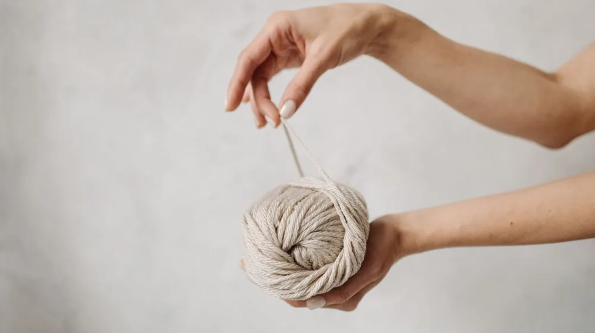

전통 매듭공예 시작 전, 이것만 확인하세요: 초보자를 위한 필수 체크리스트 5가지
사진: Jahra Tasfia Reza / Pexels (무료 이미지, 출처 표기)
전통 매듭공예 시작 전, 무엇부터 준비해야 할까요?

전통 매듭공예의 아름다움에 매료되어 시작하고 싶지만, 어디서부터 손대야 할지 막막하신가요? 어떤 도구가 필요한지, 어떤 매듭부터 배워야 하는지 고민될 때가 많습니다. 이 글은 전통 매듭공예를 처음 접하는 분들을 위해 필요한 모든 정보를 담은 실용적인 체크리스트를 제공합니다. 실패 없이 즐거운 매듭의 세계로 입문할 수 있도록 차근차근 안내해 드릴 것입니다.
매듭공예 입문, 왜 시작해볼까요?
전통 매듭은 단순한 공예를 넘어 우리 고유의 미학과 정신을 담고 있습니다. 끈 하나로 시작하여 다양한 무늬와 형태를 만들어내는 과정은 집중력을 높이고 정서적인 안정감을 선물합니다. 완성된 작품은 일상 공간에 한국적인 아름다움을 더하거나 소중한 이에게 특별한 선물이 될 수 있습니다.
손끝으로 전통의 맥을 잇는다는 자부심과 함께, 무한한 창작의 즐거움을 경험할 수 있습니다. 이러한 매력 덕분에 최근에는 매듭공예 클래스나 워크숍을 찾는 분들이 늘고 있습니다.
매듭공예 필수 도구와 재료 준비하기
매듭공예를 시작하기 전에 기본적인 도구와 재료를 갖추는 것이 중요합니다. 너무 많은 것을 한 번에 살 필요는 없으며, 다음 목록을 참고하여 꼭 필요한 것부터 준비해 보세요. 2026년 9월 기준, 온라인 공예몰이나 대형 문구점에서 쉽게 구할 수 있습니다.
- 매듭실: 초보자에게는 합사(폴리에스터나 나일론 등으로 만든 합성 실) 2합 또는 3합이 적당합니다. 굵기가 일정하고 풀림이 적어 다루기 쉽습니다.
- 매듭판(매듭베개): 매듭을 고정하고 작업할 때 필요한 도구입니다. 스펀지나 스티로폼으로 된 매듭판에 고정핀을 꽂아 사용합니다.
- 고정핀: 매듭판에 실을 고정하는 데 사용합니다. 여러 개 준비해 두는 것이 좋습니다.
- 쪽가위: 실을 깔끔하게 자를 수 있는 작은 가위입니다.
- 라이터(실 끝 처리용): 합성섬유 실의 끝을 정리하여 풀리지 않게 마감할 때 사용합니다. 화상에 주의하세요.
- 돗바늘(매듭 바늘): 복잡한 매듭 사이로 실을 넣거나 매듭을 조일 때 유용하게 쓰입니다.
- 줄자 또는 자: 매듭 길이나 실의 길이를 측정할 때 필요합니다.
초보자를 위한 첫 작품, 무엇부터 시작할까?
처음부터 너무 어려운 작품에 도전하기보다는 간단한 것부터 시작하며 자신감을 얻는 것이 중요합니다. 다음은 초보자가 시도하기 좋은 첫 작품들입니다.
- 매듭 팔찌: 한두 가지 기초 매듭만으로도 충분히 만들 수 있습니다. 착용하면서 성취감을 느낄 수 있어 인기가 많습니다.
- 열쇠고리 또는 가방 장식: 간단한 매듭 하나에 구슬이나 작은 장식품을 더해 만듭니다.
- 차량용 방향제 노리개: 매듭에 향 주머니를 달아 활용도를 높일 수 있습니다.
작품을 고를 때는 본인이 좋아하는 색깔의 실과 어울리는 디자인을 선택해 보세요. 만드는 과정이 더욱 즐거워질 것입니다.
기초 매듭 익히기: 이 5가지면 충분합니다
전통 매듭에는 수많은 종류가 있지만, 이 5가지 기초 매듭만 익혀도 대부분의 작품을 만들 수 있습니다. 각 매듭의 기본 구조를 이해하고 충분히 연습하는 것이 중요합니다. 동영상 튜토리얼을 참고하면 더욱 쉽게 배울 수 있습니다.
성공적인 매듭공예를 위한 팁 & 주의사항
매듭공예는 섬세한 작업이 요구되므로, 몇 가지 팁을 알아두면 더욱 즐겁게 시작할 수 있습니다.
- 차분함과 인내심: 매듭은 반복적인 작업이며, 때로는 실수할 수도 있습니다. 조급해하지 말고 차분하게 다시 시도하는 마음가짐이 필요합니다.
- 실 관리의 중요성: 실이 엉키지 않도록 작업 전후로 잘 정리하고 보관해야 합니다. 실이 엉키면 작업 효율이 크게 떨어집니다.
- 매듭 풀기 요령: 매듭이 잘못되었을 때는 한 가닥씩 천천히 당겨가며 푸는 것이 좋습니다. 무리하게 당기면 실이 손상될 수 있습니다.
- 다양한 작품 참고하기: 다른 사람들의 작품이나 매듭공예 서적, 온라인 갤러리를 보며 영감을 얻어 보세요. 자신만의 디자인을 구상하는 데 도움이 됩니다.
- 전문 클래스 활용: 독학이 어렵다면 문화센터나 공방에서 진행하는 초급 클래스를 수강하는 것도 좋은 방법입니다. 전문가의 지도를 받으면 실력 향상에 큰 도움이 됩니다.
이 체크리스트를 활용하여 전통 매듭공예의 첫걸음을 자신 있게 내딛으시길 바랍니다. 정확한 재료 구매 정보나 클래스 개설 여부는 각 지역의 공예 협회나 문화센터, 온라인 공예 전문몰에서 다시 확인하시길 권장합니다.
🔗 이 글도 함께 보면 좋아요: 종택 숙박, 후회 없는 선택을 위한 5가지 체크리스트
관련 추천 상품
전통 매듭 실, 매듭공예 도구 세트 관련 인기 상품 보러가기
이 포스팅은 쿠팡 파트너스 활동의 일환으로, 이에 따른 일정액의 수수료를 제공받습니다.